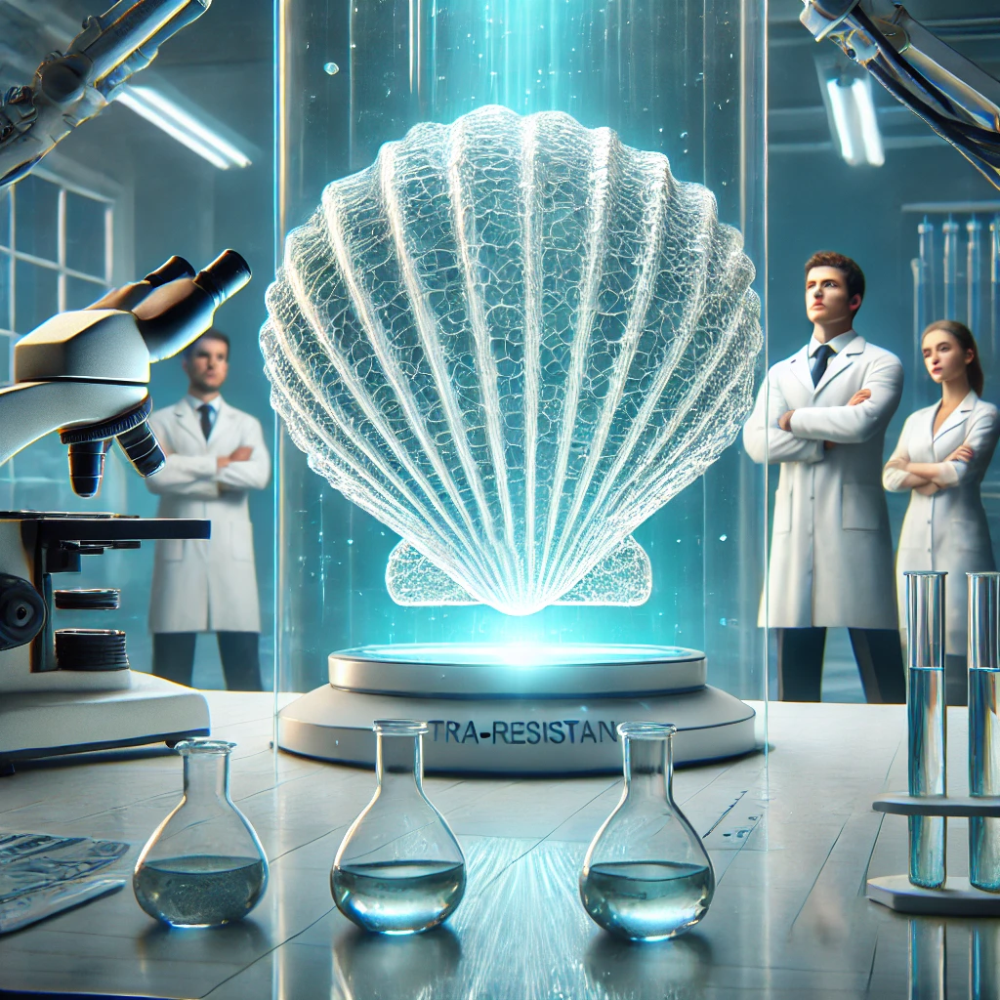

Felipe Andrade
Pesquisadores de um instituto de nanotecnologia anunciaram um avanço revolucionário na fabricação de vidros ultrarresistentes. Inspirados na estrutura natural das conchas de moluscos e da nácar (madrepérola), os cientistas desenvolveram um material que combina transparência, leveza e resistência a impactos, superando significativamente os vidros tradicionais.
Essa descoberta pode transformar diversas indústrias, desde a produção de telas de smartphones e vidros automotivos até aplicações em construção civil e engenharia aeroespacial. Além disso, o novo vidro tem maior durabilidade e menor risco de fragmentação, tornando-o uma alternativa mais segura e sustentável.A estrutura do vidro foi inspirada na madrepérola, um dos materiais mais resistentes encontrados na natureza. A madrepérola é composta por camadas microscópicas de carbonato de cálcio intercaladas com proteínas orgânicas, o que lhe confere uma resistência excepcional.
A estrutura do vidro foi inspirada na madrepérola, um dos materiais mais resistentes encontrados na natureza. A madrepérola é composta por camadas microscópicas de carbonato de cálcio intercaladas com proteínas orgânicas, o que lhe confere uma resistência excepcional.
“Nossa inspiração veio da própria natureza, que desenvolveu materiais incrivelmente fortes ao longo de milhões de anos. Ao estudar a composição das conchas marinhas, conseguimos criar um vidro que combina alta resistência com a transparência necessária para diversas aplicações tecnológicas”, explica a Dra. Mariana Vasconcelos, líder da pesquisa.
Apesar dos avanços significativos, os pesquisadores ainda enfrentam desafios para a produção em larga escala do vidro ultrarresistente. O principal obstáculo é a complexidade do processo de fabricação, que exige controle preciso da estrutura molecular para garantir sua resistência sem comprometer a transparência.